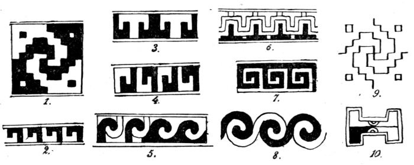
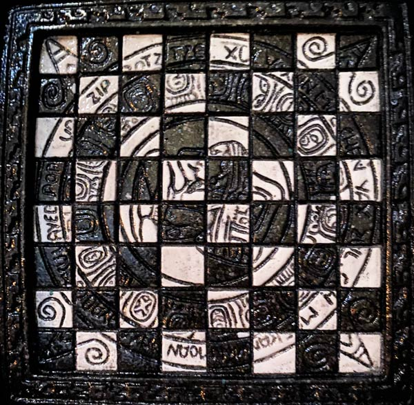
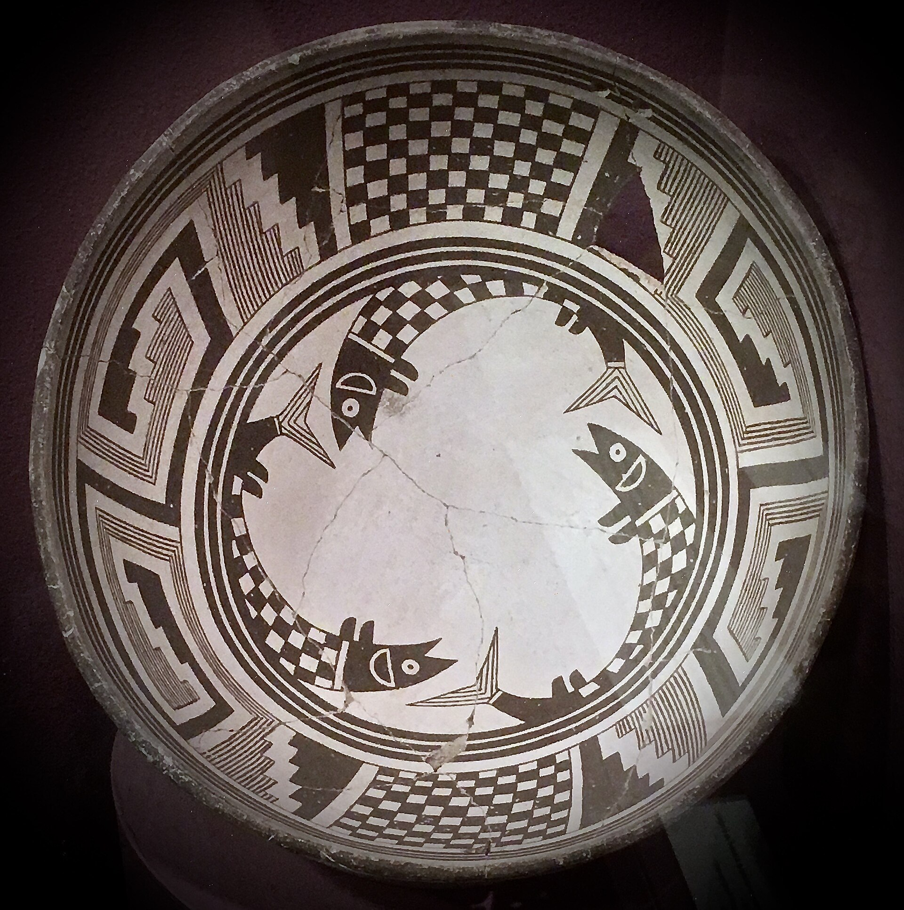

Figure 40 from The fundamental principles of Old and New World civilizations : a comparative research based on a study of the Ancient Mexican religious, sociological and calendrical systems by Zelia Nuttall:

calendar chess board

Mimbres fish pot, ca. AD 1000–1150. Millicent Rogers Museum ~ By Peter D. Tillman from USA - Mimbres fish pot, MRM Taos, CC BY-SA 2.0, https://commons.wikimedia.org/w/index.php?curid=82993870

PT3024 Laguna Pottery by Native American Laguna Pueblo Indian pottery artist Myron Sarracino photo 4 - Two Grey Hills